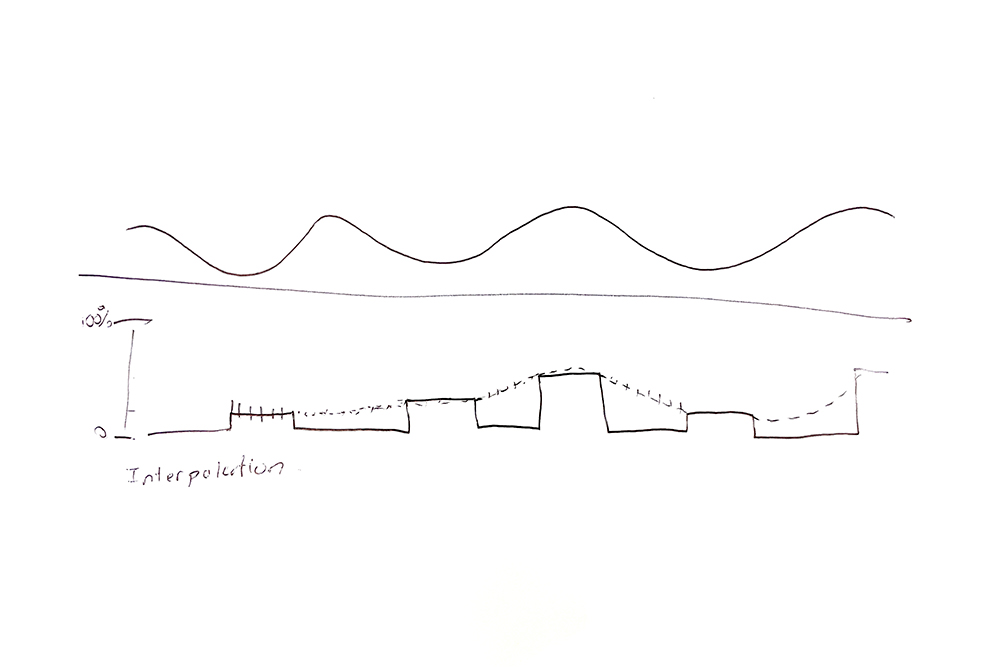

Semester One Week Six: 20.09.21 — 24.09.21
Dissertation:
// 20.09.21 — 24.09.21 - Research Proposal Outline: Updates on reading progress.
// 24.09.21 - Chat: Some Insights on Feelings from Ody Tay and Goh J-Lin.
Graduation Project:
// 22.09.21 - Discussion: Design Brief with Vikas Kailankaje and Andreas Schlegel.
#S01W06 Appendices:
// S01W06.A - Discussion: Design Brief with Vikas Kailankaje and Andreas Schlegel.
// 20.09.21 — 24.09.21 - Research Proposal Outline: Updates on reading progress.
Been drowning in reading this week, after finally tieing down what would be considered necessary readings at this point, I basically just kept reading and reading, so there wasn't really much time for anything else this week (sorry, no experiments this week). But I did gain some valuable insights through reading. I won't elaborate too much here, as much of the synthesizing and contextualizing is reflected in the RPO, but just thought I would share some thoughts.
So firstly on research methods, as my studio practice ties closely with this aspect of dissertation, this was important. Donald Schön's reader on Reflection-In-Action helped break down the process of what goes into the whole reflecting and iterating.
On affective computing, Rosalind Picard's seminal book was a necessary read on the basis of the field of affective computing, but Kirsten Boehner also brings up some fresh ideas on affective presence and it's relationship with human computer interfaces, so finding a balance between these two would be necessary for my research.
Reading Baudrillard and McLuhan helped me get a good basis in media theory, and even though some of their ideas and concepts can be seen as quite dated today, I think generally there is some value to them and it helps form like another level of thinking and context to some of the theories of communication and media that I'm looking to explore. But not going to lie, it was quite a struggle understanding their writing at times, but when I managed to sort of figure things out and put them together, it was quite satisfying.
// End of this Section.
// 24.09.21 - Chat: Some Insights on Feelings from Ody Tay and Goh J-Lin.
So I had some friends over for dinner and they were sharing their experience, dealing with emotions and some affective related issues such as anxiety and as we were talking I managed to pick up on some things that they were sharing and thought it might be useful. They mentioned that sometimes when they're communicating their feelings, they just want a state of shared experience. Sometimes it might not be about having a response or like a solution, it helps to be heard and understood even without a response. Just knowing that someone is listening or someone is going through the same thing might be enough. I thought that was interesting as looking back, some of the case studies did touch on the idea of a shared experience and artefacts like Yo-Yo Machines do not necessarily require a response.
They sometime also have trouble communicating their feelings as they think of it to be troubling people, based on the idea of a response, people would have to take time out of whatever they're doing to respond to a text or pick up your call, so could there be a way to communicate your feelings in a unobtrusive way? This ties back into my idea of communicating the subtleties of affect in a non-explicit manner. They also might face issues identifying their own feelings at times and this reminded me of the project by Microsoft Research, Affect Aura, where sensors would pick on a user's affective state and notifying them of it.
Lastly they share something they picked up on while seeing a psychotherapist, as I probed them on how the psychotherapist picks up on affective states while they're in therapy and like what non-verbal markers do they look out for. Besides the obvious facial indicators, there's also links to body language, posture, subtle eye movements and expression in drawing. Expanding on expression in drawing, they mentioned that they would be asked to write something down or draw something and the intensity and movement you make while doing that is a potential marker for the mood you're feeling. If you're angry it would be hard,fast aggressive. If you're happy it could be lighter and more free in movement. I won't dive too deep into psychotherapy, but I do see a value in doing some light reading to find out more about indicators that I could look into exploring.
// 22.09.21 - Discussion: Design Brief with Vikas Kailankaje and Andreas Schlegel.
Refer to Appendix SO1W06.A for discussion transcript.
Glad that the feedback received this week was generally positive and that my explorations over the last few weeks were pretty good and that I was on the right track. Andreas mentioned something about form, and that's something that I have not really given much thought to at this point, cause getting it to work was already a challenge in itself. Also about the states and working around defining just two states in the beginning, I think that brings about a good anchor to the explorations at this point, cause I'm not even sure if that possible yet at this point so definitely something to work on there. Just have to remember to keep things simple and work in small steps in order to slowly scale things from here.
Some additional technical comments from Andreas raised an issue with the hardware limitations of the Macbook, as natively, Macbooks have a refresh rate limit on bluetooth devices which would cause some lag and delay if we were sending real time data. The next thing would be figuring out how to get them to communicate over the WIFI, especially at the current stage where there has to be a mediating computer device to connect them, might stray away from the ideas I had so far. So maybe it's an issue of finding the right dongles and attachments to add to the microcontroller to give it more capabilities than what it already has.
Image: Andreas's interpolation sketch.
Another thing was that it might be good to look at how the data received could be interpolated to fill in the gaps in the overall flow of things. As now whenever the data is captured, there are points where it's unknown, or no data is captured, so interpolation would help fill those gaps through creating values to make a constant rate of change between various points. Might have to look into ways of doing this as well once I've figured out more about the way the machine learning trainer works.
-- End of the Week --
// S01W06.A - Discussion: Design Brief with Vikas Kailankaje and Andreas Schlegel.
Andreas Schlegel
Just continue with it, don't be afraid of how it looks like at the moment, I think it's really great that this development is taking place and you're getting on with producing something. Motion one thing, whatever, distance another thing, just go for it, make some experiments and maybe figure out what works best for you and your project. The technical challenges, just figure them out, if you need help we can look at it, I can give you some hints and tips, but I think it's really great that you're getting started with these experiments. Putting them into a form I think you can think about but at this point I don't think it's necessary, This can always come at a later point and it's good that you've narrowed down your ideas and you've taken a direction just please continue and follow that direction.
Vikas Kailankaje
I like the fact that at each point when you iterate, the parameters are simple, so that you can scale it. I think that's something we kept mentioning to previous students. When's that too many things happening at the same time, you also can't figure out whats going on. It wouldn't make sense to someone listening also, we wouldn't know what to filter and get out of it so that's good.
Andreas Schlegel
Keep it simple also with whatever you teach these machines, maybe just distinguish between two states, hectic and relaxed and maybe see what happens. Especially if you're talking to two different spaces and people at the same time which I still believe is the objective here which haven't been achieved yet, maybe that's the next step. If there's two states, you can always scale it up.
// End of Appendix A.